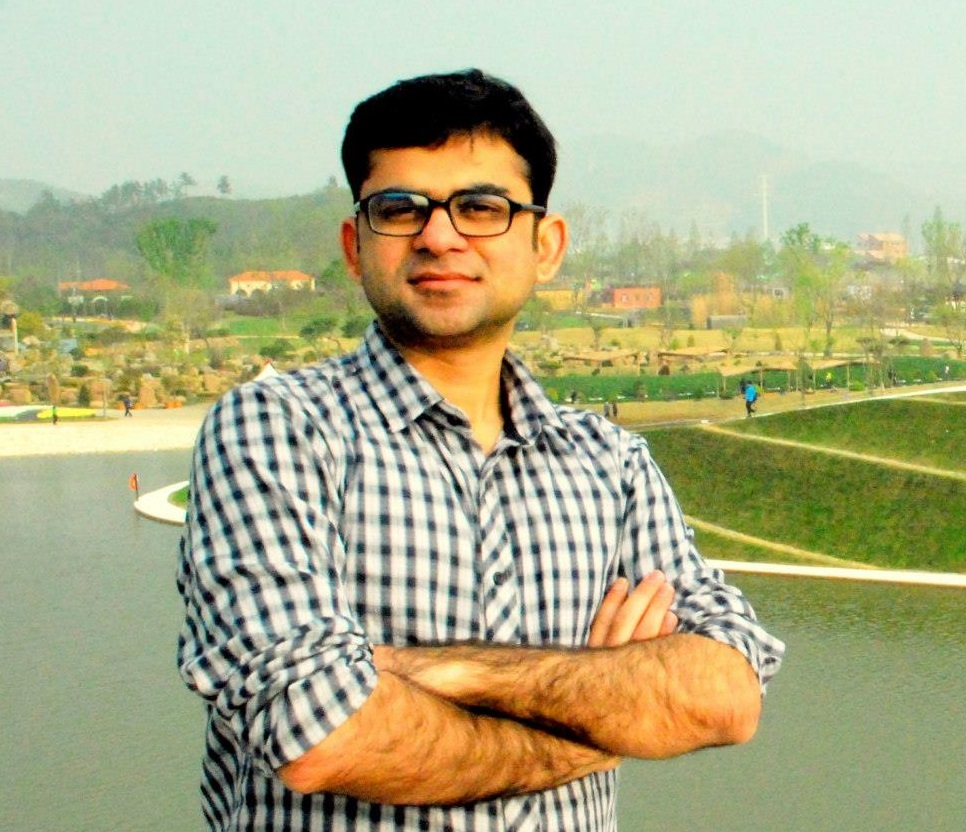

|

|
Jahanzeb Maqbool Hashmi
hashmi [dot] 29 [AT] osu.edu
Resume /
CV
Google Scholar /
LinkedIn /
GitHub /
Twitter
I am a Senior Research Engineer at The Ohio State University (OSU) where I work at Network Based Computing Laborartory (NBCL).
I work on design and development of scalable software systems that are the backbone of scientific applications and Deep Dearning (DL) frameworks running on multi-petaflop supercomputers (e.g., TACC Frontera, SDSC Expanse) and HPC Clouds (e.g., Microsoft Azure and Amazon AWS Parallel Cluster).
I am working on various projects in the popular high-performance MPI library MVAPICH2 with focus on optimizing MPI runtime for emerging HPC and cloud systems. I am primarily leading the design and development of GPU-aware MPI library for RDMA networks with AMD/NVIDIA hardware, heirarchical MPI collectives for scalable scientific and deep learning applications, efficient data-movement for sparse data layouts, high-level abstractions for asynchronous communication offloading, and performance engineering of parallel applications on multi-petaflop supercomputers and cloud systems.
|
|
|
Education
I completed my Ph.D. in Computer Science and Engineering from OSU where I was advised by Prof. D. K. Panda.
Prior to joining OSU, I did my Masters from Ajou University, South Korea where I worked on energy-efficient High Performance Computing (HPC) using low-powered ARM SoC based cluster applications. I did my B.S from National University of Science and Technology (NUST), Pakistan where I worked on performance characterization and parallelization of numerical simulation codes e.g., particle simulation with SPH methods on multi-core using MPI, OpenMP, and CUDA.
|
|
|
Updates
-
Oct 2020 - Co-authored work "Blink" has been accepted to HiPC'20
-
Jun 2020 - Co-authored work "GEMS" has been accepted to SC'20
-
Jun 2020 - I started working full-time as a Senior Research Associate Engineer at NBCL
-
May 2020 - I have successfully defended my Ph.D. thesis (Slides)
-
May 2020 - "FALCON-X" is accepted to JPDC special issue
-
Jan 2020 - Our work on efficient MPI topologies for HPC Clouds got accepted to IPDPS'20
-
May 2019 - I have passed my Ph.D. candidacy exam (Slides)
-
Mar 2019 - "FALCON" got nominated for the Best Paper Award at IPDPS'19
-
Mar 2019 - Our paper on characterizing shared-address-space MPI collectives got accepted to CCGrid'19
-
Dec 2018 - Our paper "FALCON" on efficient processing of MPI derived datatypes got accepted to IPDPS'19
-
Sep 2018 - I presented co-authored paper at Cluster'18 that won Best Paper Award
-
Jul 2018 - Co-authored paper on co-operative rendezvous protocols got nominated for Best Paper Award at SC'18
-
May 2018 - I presented our shared-address-space MPI runtime work at IPDPS'18 at Vancouver, Canada (Slides)
-
Apr 2018 - I gave a talk at IXPUG held at KAUST, Saudi Arabia (Group Photo) (Slides)
-
Dec 2018 - Our paper on sparse non-contigous MPI datatypes (FALCON) is accepted to IPDPS'19
-
Jan 2018 - Our work on designing shared-address-space MPI runtime is accepted to IPDPS'18
|
Select Publications
For complete list of publications, please refer to my Google Scholar page.
Blink: Towards Efficient RDMA-based Communication Coroutines for Parallel Python Applications
A. Shafi, J. Hashmi, H. Subramoni, and DK Panda.
27th IEEE International Conference on High Performance Computing, Data, Analytics and Data Science (HiPC), 2020.
GEMS: GPU Enabled Memory Aware Model Parallelism System for Distributed DNN Training
A. Jain, A. Awan, A. Aljuhani, J. Hashmi, Q. Anthony, H. Subramoni, D. Panda, R. Machiraju, A. Parwani
IEEE/ACM International Conference for High Performance Computing, Networking, Storage, and Analysis (SC), 2020.
FALCON-X: Zero-copy MPI Derived Datatype Processing on Modern CPU and GPU Architectures
J. Hashmi, C. Chu, S. Chakraborty, M. Bayatpour, H. Subramoni, and DK Panda.
Journal of Parallel and Distributed Computing (JPDC), Volume 144, October 2020, Pages 1-13, doi.org/10.1016/j.jpdc.2020.05.008, 2020.
Machine-agnostic and Communication-aware Designs for MPI on Emerging Architectures
J. Hashmi, S. Xu, B. Ramesh, M. Bayatpour, H. Subramoni, and D. K. Panda.
34th IEEE International Parallel and Distributed Processing Symposium (IPDPS), 2020.
Slides
FALCON: Efficient Designs for Zero-copy MPI Datatype Processing on Emerging Architectures
J. Hashmi, S. Chakraborty, M. Bayatpour, H. Subramoni, and DK Panda.
33th IEEE International Parallel and Distributed Processing Symposium (IPDPS), 2019.
Best Paper Finalist
Slides
Designing Efficient Shared Address Space Reduction Collectives for Multi-/Many-cores
J. Hashmi, S. Chakraborty, M. Bayatpour, H. Subramoni, and DK Panda.
32th IEEE International Parallel and Distributed Processing Symposium (IPDPS), 2018.
Slides
Design and Characterization of Shared Address Space MPI Collectives on Modern Architectures
J. Hashmi, S. Chakraborty, M. Bayatpour, H. Subramoni, and DK Panda.
19th Annual IEEE/ACM International Symposium in Cluster, Cloud, and Grid Computing (CCGrid), 2019.
Slides
Cooperative Rendezvous Protocols for Improved Performance and Overlap
S. Chakraborty, M. Bayatpour, J. Hashmi, H. Subramoni, and DK Panda.
IEEE/ACM International Conference for High Performance Computing, Networking, Storage, and Analysis (SC), 2018.
Best Paper Finalist
SALaR: Scalable and Adaptive Designs for Large Message Reduction Collectives
M. Bayatpour, S. Chakraborty, J. Hashmi, H. Subramoni, and DK Panda.
IEEE International Conference on Cluster Computing (CLUSTER), 2018.
Best Paper Award
S-Caffe: Co-designing MPI Runtimes and Caffe for Scalable Deep Learning on Modern GPU Clusters
M. Bayatpour, S. Chakraborty, J. Hashmi, H. Subramoni, and DK Panda.
22nd ACM SIGPLAN Symposium on Principles and Practice of Parallel Programmin (PPoPP), 2017.
Kernel-assisted Communication Engine for MPI on Emerging Manycore Processors
J. Hashmi, K. Hamidouche, H. Subramoni, and DK Panda.
24th IEEE International Conference on High Performance Computing, Data, Analytics and Data Science (HiPC), 2017.
Slides
Exploiting and Evaluating OpenSHMEM on KNL Architecture
J. Hashmi, M. Li, H. Subramoni, and DK Panda.
4th Workshop on OpenSHMEM and Related Technologies (OpenSHMEM), 2017.
Slides
Enabling Performance Efficient Runtime Support for Hybrid MPI+UPC++ Programming Models
J. Hashmi, K. Hamidouche, and DK Panda.
18th IEEE International Conference on High Performance Computing and Communications (HPCC), 2016.
Slides
|
|